Menú
| Barcelona | Madrid | Valencia | Mallorca |
|---|---|---|---|
| 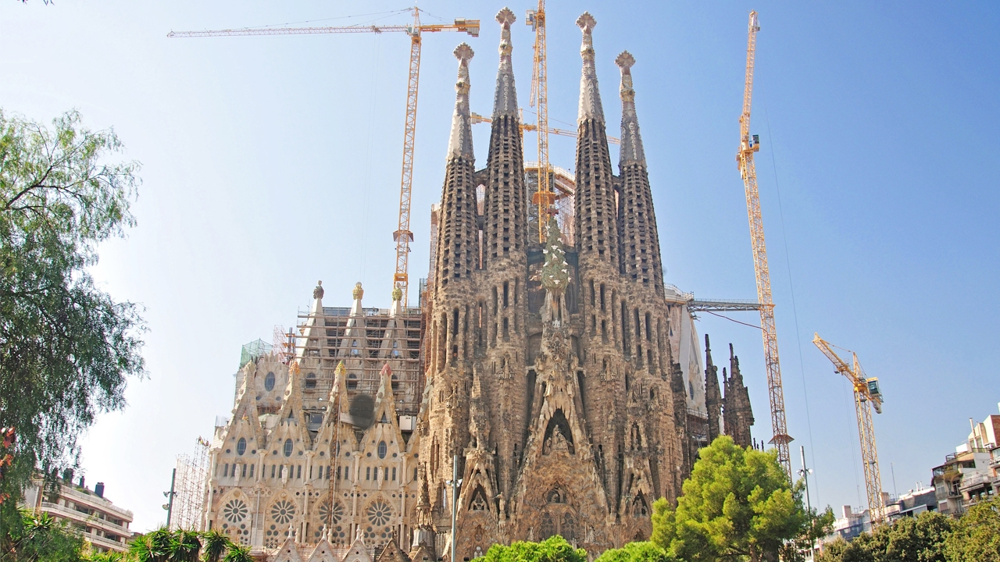 |  |
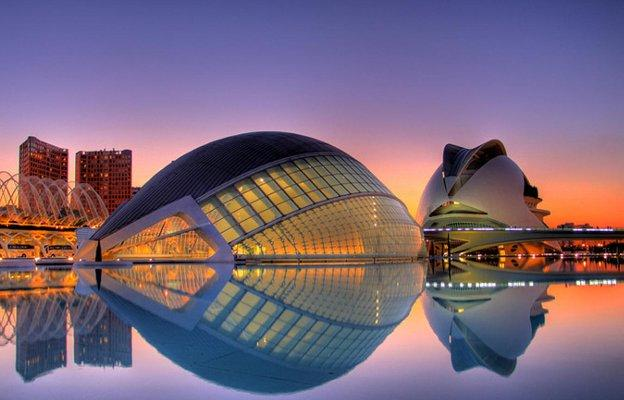 | 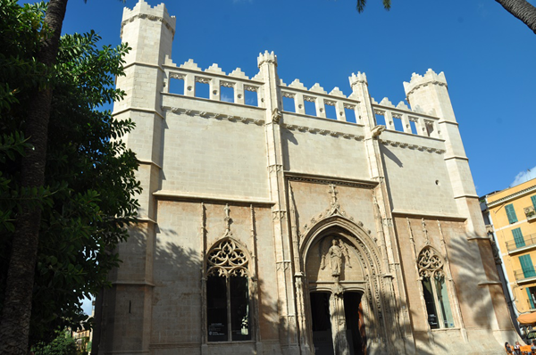 |
| Córdoba | Almería | Sevilla | Granada |
| 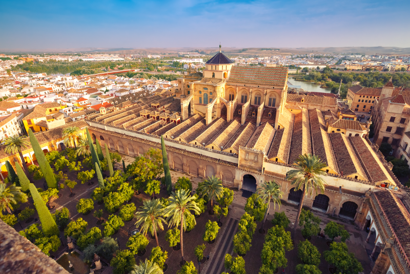 | 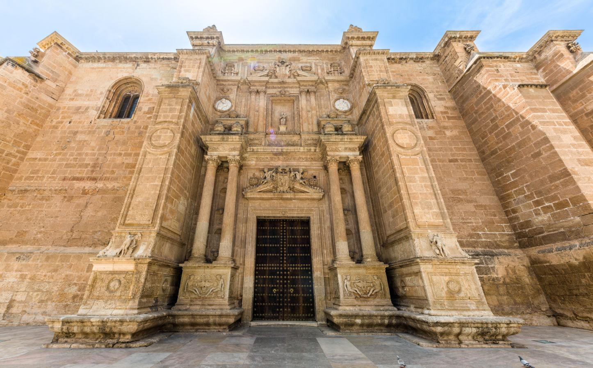 | 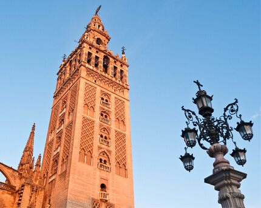 |
| Barcelona | Madrid | Valencia | Mallorca |
|---|---|---|---|
| 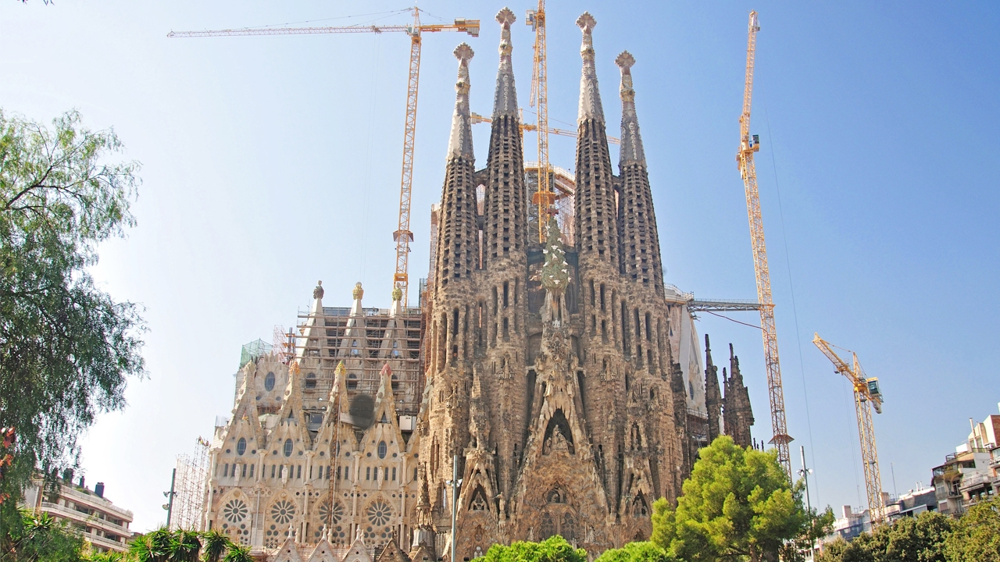 | |
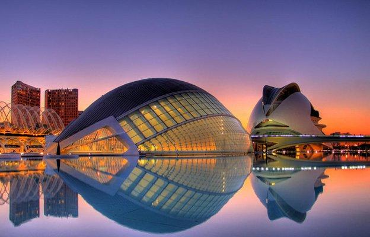 | 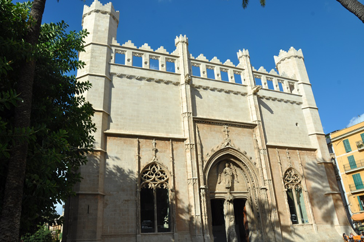 |
| Córdoba | Almería | Sevilla | Granada |
| 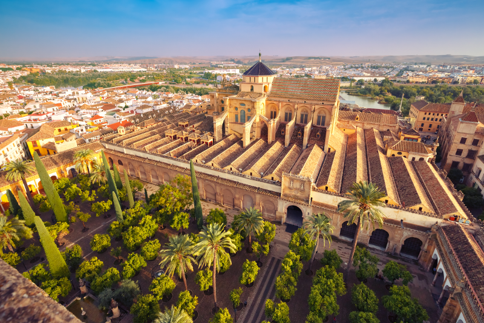 | 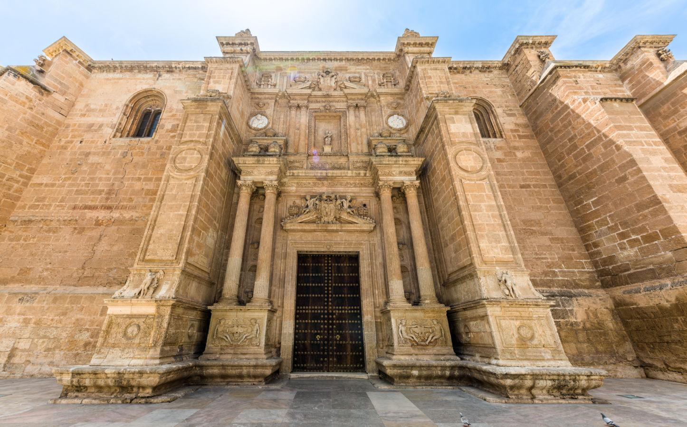 | 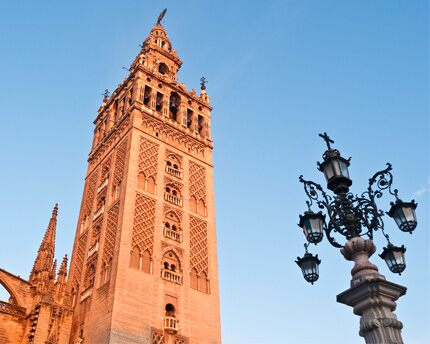 |
Barcelona es una ciudad española, capital de la comunidad autónoma de Cataluña, de la provincia homónima y de la comarca del Barcelonés. Con una población de 1 664 162 habitantes en 2020,7 es la segunda ciudad más poblada de España y de la península ibérica después de Madrid, y la décima de la Unión Europea. El área metropolitana de Barcelona tiene 3 339 279 (2020)8 y el ámbito metropolitano de Barcelona 4 895 876 habitantes (2019), siendo así la quinta ciudad de mayor población de la Unión Europea.910
Madrid es un municipio y una ciudad de España, con categoría histórica de villa.9Constituye la capital del Estado10 y de la Comunidad de Madrid. En su término municipal, el más poblado de España, viven 3 334 730 personas empadronadas, según el INE de 2020, lo que la convierte en la segunda ciudad más poblada de la Unión Europea, por detrás de Berlín. Su área metropolitana tiene 6 779 888 habitantes,11 la segunda más poblada de la Unión Europea tras la de París, en otras fuentes detrás también de la Región del Ruhr.12131415
Valencia (en valenciano y oficialmente, València,6 AFI: [vaˈɫensia])7es un municipio8 y una ciudad de España, capital de la provincia homónima y de la Comunidad Valenciana. Con una población de 801 545 habitantes (2020),9que sube a 1 581 057 habitantes (2020) si se incluye su espacio urbano,10 es la tercera ciudad y área metropolitana más poblada de España, por detrás de Madrid y Barcelona.11
Mallorca es una isla española situada en la parte central del archipiélago balear, en el mar Mediterráneo. Su capital, y también la de la comunidad autónoma de las Islas Baleares, es Palma de Mallorca,1 siguiéndola en importancia los municipios de Calviá, Inca y Manacor. La isla de Cabrera y todos sus islotes pertenecen administrativamente a la capital.
Córdoba es la ciudad capital de la provincia de Córdoba, Argentina. Se sitúa en la región central del país, a ambas orillas del río Suquía. Es la segunda ciudad más poblada de Argentina después de Buenos Aires y la más extensa del país. También se constituye en un importante centro cultural, económico, educativo, financiero y de entretenimiento de la región. También es conocida como «La Docta» o «La Ciudad de las Campanas».123
Almería es una ciudad y municipio español, capital de la provincia homónima, en la comunidad autónoma de Andalucía. Es el centro neurálgico de la Comarca Metropolitana de Almería, en el extremo sureste de la península ibérica y de la comarca turística de Almería-Cabo de Gata-Níjar.3 La rodean por el oeste la Sierra de Gádor, por el norte Sierra Alhamilla y por el este el valle y delta del río Andarax y, más allá, una llanura que culmina en la sierra de Cabo de Gata. Al sur, su puerto y litoral se abren a una amplia bahía sobre el mar Mediterráneo.4
Sevilla es un municipio y una ciudad de España, capital de la provincia homónima y de Andalucía.5 Contaba con 691 395 habitantes en 2020,6 por lo que es la ciudad más poblada de Andalucía, la cuarta de España7 después de Madrid, Barcelona y Valencia y la 32.ª de la Unión Europea. El municipio tiene una superficie de 140,8 km².8 El área metropolitana de Sevilla está compuesta por 46 municipios, incluye a una población de 1 548 741 habitantes (INE, 2020) y ocupa una superficie de 4905,04 km².9
Granada es una ciudad y municipio español, capital de la provincia homónima, en la comunidad autónoma de Andalucía. Está situada en la parte central de la comarca de la Vega de Granada, a una altitud de 680 m s. n. m., en una amplia depresión intrabética formada por el río Genil y por el piedemonte del macizo más alto de la península ibérica, Sierra Nevada, que condiciona su clima.